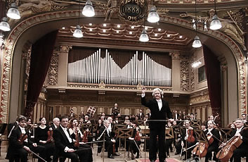

Carnegie Hall Presents
Evgeny Kissin
Pianist
On Saturday, May 16, 2016 at 8PM
At Perelman Stage in Stern Auditorium
Evgeny Kissin is always exciting, but never more so than when he performs music by composers with whom he is most closely associated. Kissin returns to Carnegie Hall with works by his repertoire staples-Chopin and Liszt-as well as sonatas by Beethoven.
The nocturne form was conceived by Irish composer John Field, but Chopin reinvented it with an inspired infusion of song-like melodies.
While based on a traditional Polish dance, Chopin’s mazurkas are dazzlingly original showpieces that offer striking harmonic invention and breathless flights of technical brilliance.
Program
BEETHOVEN Piano Sonata No. 21 in C Major, Op. 53, “Waldstein”
PROKOFIEV Piano Sonata No. 4 in C Minor
CHOPIN Nocturne in B-flat Minor, Op. 9, No. 1
CHOPIN Nocturne in B Major, Op. 9, No. 3
CHOPIN Nocturne in C Minor, Op. 48, No. 1
CHOPIN Mazurka in F-sharp Minor, Op. 6, No. 1
CHOPIN Mazurka in C-sharp Minor, Op. 6, No. 2
LISZT Hungarian Rhapsody No. 15 in A Minor, “Rakoczi-Marsch”
Encores
CHOPIN Waltz in B Minor, Op. 69, No. 2

LISZT Etude No. 5 in E Major, "La Chasse" (after Niccolo Paganini, Caprice No. 9 in E Major)
PROKOFIEV March from The Love for Three Oranges
Biography
Evgeny Kissin
Evgeny Kissin’s musicality, the depth and poetic quality of his interpretations, and his extraordinary virtuosity have earned him the veneration and admiration deserved only by one of the most gifted classical pianists of his generation and, arguably, generations past.
He is in demand the world over, and has appeared with many of the world’s great conductors, including Claudio Abbado, Vladimir Ashkenazy, Daniel Barenboim, Christoph von Dohnanyi, Carlo Maria Giulini, James Levine, Lorin Maazel, Riccardo Muti, and Seiji Ozawa, as well as all the great orchestras of the world.
Mr. Kissin was born in Moscow in October 1971. He began to play by ear and improvise on the piano at the age of two. At six years old, he entered a special school for gifted children, Moscow’s Gnessin School of Music, where he was a student of Anna Pavlovna Kantor, who has been his only teacher. At the age of 10, he made his concerto debut, playing Mozart’s Piano Concerto No. 20 in D Minor, K. 466, and gave his first solo recital in Moscow one year later.
He came to international attention in March 1984 when, at the age of 12, he performed Chopin’s First and Second piano concertos in the Great Hall of the Moscow Conservatory with the Moscow State Philharmonic under Dmitri Kitaenko. This concert was recorded live by Melodia, and a two-LP album was released the following year. Given the astounding success of this recording, Melodia proceeded to release five more LPs of live performances in Moscow over the following two years.

In 1990, Mr. Kissin made his North American debut, performing both Chopin piano concertos with the New York Philharmonic conducted by Zubin Mehta. The following week, he opened Carnegie Hall’s centennial season with a spectacular debut recital, recorded live by BMG Classics great orchestras of the world.
Musical awards and accolades from around the world have been generously bestowed upon Mr. Kissin over the years. He was special guest at the 1992 Grammy Awards ceremony, broadcast live to an audience estimated to be larger than one billion, and three years later became Musical America’s youngest-ever Instrumentalist of the Year.
He is also an honorary member of the Royal Academy of Music in London and has received an honorary doctorate from the Manhattan School of Music and the Shostakovich Award (one of Russia's highest musical honors). Mr. Kissin’s recording of works by Scriabin, Medtner, and Stravinsky (RCA Red Seal) won him a Grammy Award in 2006, and he won another Grammy in 2010 for his recording of Prokofiev’s Second and Third piano concertos with the Philharmonia Orchestra conducted by Vladimir Ashkenazy (EMI Classics).
For more information, visit www.carnegiehall.org/kissin/